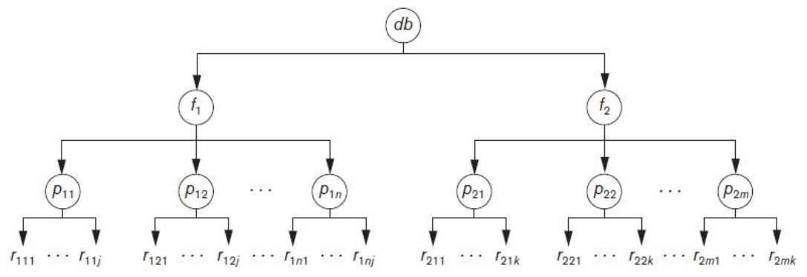
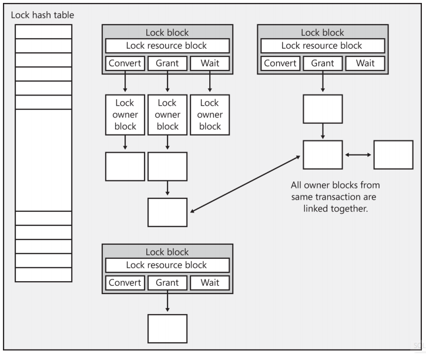
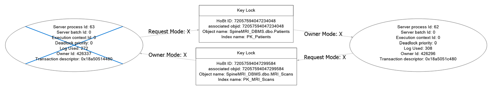
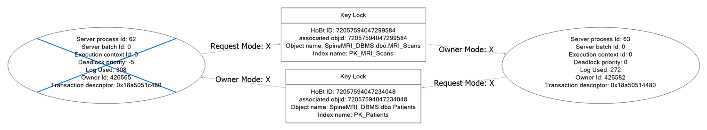

- Anomaliesdirty, non-repeatable, phantom
- Locksgranularity and modes
- Q1–Q3 locksDMV evidence
- Deadlockgraph, victim
- MVCCRCSI, Snapshot
- Rulesrecommendations
Locks have sizes
SQL Server can lock a row, a page or a whole table. The optimizer picks the access path, and the access path decides the lock footprint: a scan takes page locks, a seek takes a few key locks.


Q1–Q3 against a concurrent writer
A writer re-labels one slice of patient 0002 and holds its locks for 10 seconds. Patient 0002 is not in the result of Q1 or Q2 — yet:
| Index state | Query | Locks requested on MRI_Scans | Wait (locking) | Wait (RCSI) |
|---|---|---|---|---|
| Primary key only | Q1 | 1,874 page locks | 7,969 ms | 0 ms |
| Q2 | 1,874 page locks | 7,976 ms | 0 ms | |
| Q3 | 1,903 page locks (+3,780 on Image_Features) | 7,972 ms | 0 ms | |
| + covering index (Role 2) | Q1 | 65 key + 3 page locks | 0 ms | 0 ms |
| Q2 | 65 key + 3 page locks | 0 ms | 0 ms | |
| Q3 | 1,588 page locks | 7,982 ms | 0 ms |
A deadlock, caught on camera
Session A updates a scan then the patient; session B does the reverse. Each waits for the other — a cycle. The lock monitor finds it and rolls one session back with error 1205.
| Run | A priority / log used | B priority / log used | Victim | Resolved after |
|---|---|---|---|---|
| 1 · NORMAL / NORMAL | 0 / 308 B | 0 / 272 B | B (cheaper to undo) | 1.83 s |
| 2 · A set to LOW | −5 / 308 B | 0 / 272 B | A (priority wins over cost) | 1.21 s |


DEADLOCK_PRIORITY LOW, session A is sacrificed even though it is more expensive to roll back.The reader's view: waiting versus versioning
Statement-level snapshot
The reader instantly gets the last committed value (“Confirmed”) from the version store (64 KB, 8 pages). It may be a few seconds old.
Transaction-level snapshot
A second read inside the same snapshot transaction still returns “Confirmed” although “Revised” is already committed.
Writers still collide
A snapshot transaction that tries to update a row changed meanwhile is aborted with error 3960: no lost update, but the application must retry.
- Turn on RCSI for this read-heavy clinical database.
- Use Snapshot for long reports that need one consistent picture.
- Always access
PatientsbeforeMRI_Scans; keep transactions short; retry on 1205. - Index
MRI_Scans.PatientID: Q1/Q2 lock 65 keys instead of 1,874 pages.